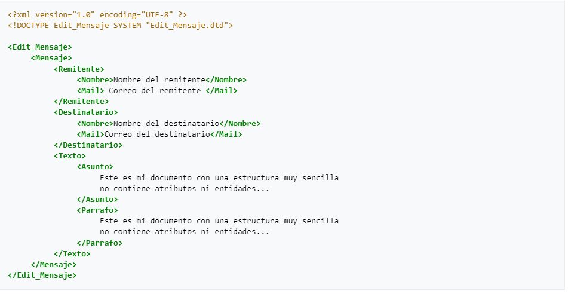

XML proviene del GML creado por IBM en 1970 surgiendo por la necesidad de almacenar grandes cantidades de informacion y compartirla en otros Sistemas Operativos y plataformas. A ISO le gusto tanto que en 1986 trabajaorn para normalizarlo creando asi SGML (Standard Generalized Markup Language) que es capaz de adaptarse a una gran cantidad de problemas y a partir de SGML se han creado mas sistemas que son capaces de almacenar informacion.En 1989 Tim Berners Lee creo la Web junto a HTML. HTML se definio en el marco de SGMl y es la aplicacion mas conocida del estandar SGML. Sin embargo HTML tiene limitaciones una de ellas siendo que el vocabulario de un documento es fijo,establecido por el DTD.Asi que es imposible mezclar vocabularios ya que asi el interprete no seria capaz de analizar el documento.
La sintaxis de XMl se basa en elementos que se marcan con etiquetas. Las etiquetas tienen la siguiente forma "<edad>". La siguiente imagen es un ejemplo de una estructura XML
XML se ha usado para la creacion de varios lenguajes como CSS(Hojas de estilo de cascada), XQuery(Consulta de datos), JDOM(Programacion),XADES(Seguridad)